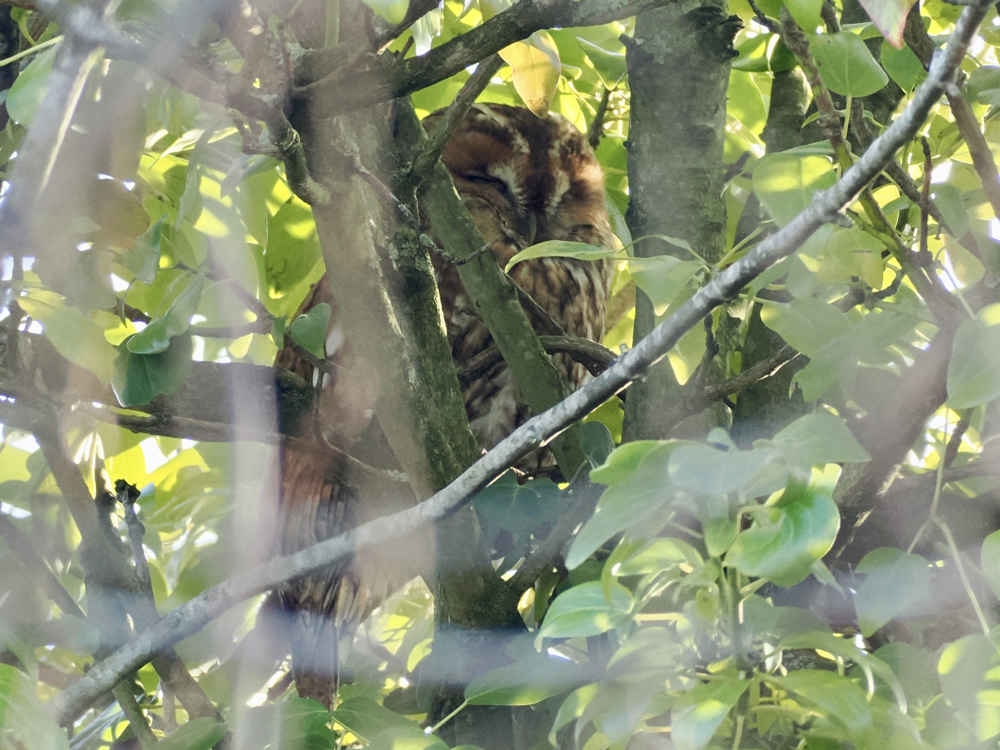
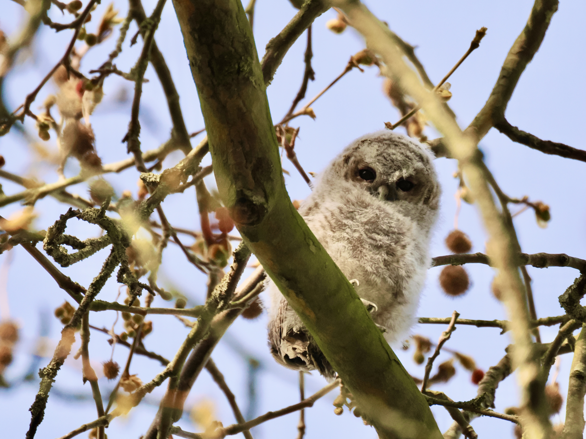

Tawny Owl
Strix aluco
Order: Strigiformes
Family: Strigidae

A mostly nocturnal, medium-sized brown owl. Roosts in dense trees during the day. This one has found itself comfy in the same tree for over two years, according to reserve volunteers!

Tawny Owls nest in tree cavities. As chicks grow, they leave the nest and "branch", hopping around the nest and climbing trees. This owlet is fluffy and curious, and arguably much easier to find than a roosting adult. While I have found these two owlets, I could not see their parents though they should be nearby!